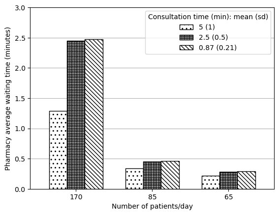

Figure 2 presents results from sensitivity analysis of configuration 1.
Note: These are created from 10 replications currently for simplicity. At 10 replications, we would expect mean values to vary only slightly from further replication numbers. Hence, if felt similar at 10, have marked as succesfully reproduced without also testing at 100 replications.
Parameters
In these figures, we vary:
Number of outpatients per day:
170 (same as config 4)
85
65
Average service time for outpatients - mean (SD):
0.87 (0.21) (same as config 1)
2.5 (0.5)
5 (1)
To calculate inter-arrival times from those numbers per day, based on article description and the provided patient counts and equivalent IAT, understand the method for calculation to be round(60/(n/8.5)), where n is the number of arrivals per day. As such…
# Calculation of inter-arrival timesprint(f'For 170 outpatients, use IAT (rounded to nearest int): {60/(170/8.5)}')print(f'For 85 outpatients, use IAT (rounded to nearest int): {60/(85/8.5)}')print(f'For 65 outpatients, use IAT (rounded to nearest int): {60/(65/8.5)}')
For 170 outpatients, use IAT (rounded to nearest int): 3.0
For 85 outpatients, use IAT (rounded to nearest int): 6.0
For 65 outpatients, use IAT (rounded to nearest int): 7.846153846153846
Set up
# To run modelimport PHC# To import results and produce figuresimport xlrdimport pandas as pdimport osimport matplotlib.pyplot as pltimport numpy as np# To speed up run timefrom multiprocessing import Pool'''# Additional package to record runtime of this notebookimport timestart = time.time()'''
'\n# Additional package to record runtime of this notebook\nimport time\nstart = time.time()\n'
# Paths to save image files tooutput_folder ='outputs'fig2a_path = os.path.join(output_folder, 'fig2a.png')fig2b_path = os.path.join(output_folder, 'fig2b.png')fig2c_path = os.path.join(output_folder, 'fig2c.png')fig2d_path = os.path.join(output_folder, 'fig2d.png')
Run model
As this is a variation on configuration 1 (which is the default parameters in PHC.py), we just need to input the varying number of outpatients and service time.
# TODO: Run with 100 replications# Varying number of outpatientsarr_dict = [ {'OPD_iat': 3,'rep_file': 'arr170' }, {'OPD_iat': 6,'rep_file': 'arr85', }, {'OPD_iat': 8,'rep_file': 'arr65', }]# Varying service timeserv_dict = [ {'mean': 0.87,'sd': 0.21,'consult_boundary_1': 0.5, # From PHC.py'consult_boundary_2': 0.3, # From PHC.py'rep_file': 'serv087' }, {'mean': 2.5,'sd': 0.5,'consult_boundary_1': 1, # Guess'consult_boundary_2': 1, # Guess'rep_file': 'serv25' }, {'mean': 5,'sd': 1,'consult_boundary_1': 2, # From config 4'consult_boundary_2': 2, # From config 4'rep_file': 'serv5' }]
Create each combination for the reproduction
dict_list = []for arr in arr_dict:for serv in serv_dict:# Combine the dictionaries comb = {**arr, **serv}# Replace the file name comb['rep_file'] =f'''f2_{arr['rep_file']}_{serv['rep_file']}.xls'''# Save to list dict_list.append(comb)len(dict_list)
9
# Append 's_' to all itemsfor i, d inenumerate(dict_list): dict_list[i] = {f's_{k}': v for k, v in d.items()}# Preview exampledict_list[0]
Run the model (with parallel processing to reduce run time)
'''# Wrapper function to allow input of dictionary with pooldef wrapper(d): return PHC.main(**d)# Create a process pool that uses all CPUswith Pool() as pool: # Run PHC.main() using each of inputs from config pool.map(wrapper, dict_list)'''
'\n# Wrapper function to allow input of dictionary with pool\ndef wrapper(d):\n return PHC.main(**d)\n\n# Create a process pool that uses all CPUs\nwith Pool() as pool:\n # Run PHC.main() using each of inputs from config\n pool.map(wrapper, dict_list)\n'
Function to process results
def process_results(files):''' Imports files in provided list and produces a single dataframe with mean results from across the replications Parameters: ---------- files : list List of file names (exc. file type) containing replication results Returns: -------- summary : dataframe Dataframe with mean results for each model variant in file list '''# Empty list to store results result_list = []for f in files:# Import .xls and convert to pandas dataframe book = xlrd.open_workbook(os.path.join(output_folder, f'{f}.xls')) result = pd.read_excel(book, header=None, index_col=0)# Find mean from the replication# Save as dataframe, dropping the duplicate rows (NCD occ twice) res = pd.DataFrame({f: result.mean(axis=1)}).drop_duplicates()# Remove index name res.index.name =None# Save to list result_list.append(res)# Combine into single dataframe summary = pd.concat(result_list, axis=1)return summary
Create Figure 2A
# Import and process resultsdata_full = process_results(['f2_arr170_serv087', 'f2_arr85_serv087', 'f2_arr65_serv087','f2_arr170_serv25', 'f2_arr85_serv25', 'f2_arr65_serv25','f2_arr170_serv5', 'f2_arr85_serv5', 'f2_arr65_serv5'])# Filter to doctor utilisationdata_2a = data_full.loc['doc occ']data_2a
def create_2a_2d(s, ylab, file, ylim=False):''' Creates Figure 2A or 2D (as both are very similar) Parameters: ----------- s : pd.Series Series with mean result as values, and the model variant as index ylab : string Label for y axis file : string Path to save figure ylim : list, optional, default False If provided, gives the lower and upper limits for the Y axis Returns: -------- matplotlib figure '''# Reshape data so in appropriate format for plotting grouped bar chart names = [170, 85, 65] s5 = [s['f2_arr170_serv5'], s['f2_arr85_serv5'], s['f2_arr65_serv5']] s25 = [s['f2_arr170_serv25'], s['f2_arr85_serv25'], s['f2_arr65_serv25']] s87 = [s['f2_arr170_serv087'], s['f2_arr85_serv087'], s['f2_arr65_serv087']] data = pd.DataFrame( {'5 (1)': s5, '2.5 (0.5)': s25, '0.87 (0.21)': s87}, index=names)# Plot data ax = data.plot.bar(edgecolor='black', color='white', width=0.7)# Add patterns bars = ax.patches pattern = np.repeat(['..', '+++++', '\\\\\\\\'], 3)for bar, hatch inzip(bars, pattern): bar.set_hatch(hatch) ax.legend(title='Consultation time (min): mean (sd)')# Adjust figure plt.xlabel('Number of patients/day') plt.ylabel(ylab)if ylim: plt.ylim(ylim) plt.xticks(rotation=0) ax.grid(axis='y') ax.set_axisbelow(True) plt.savefig(file, bbox_inches='tight') plt.show()
Import and process data - note: used 0.87 since that is PHC1 and this is described as variants on that but, as paper notes and as I’ve observed (not shown here), “the doctor’s consultation time does not impact this outcome”, so it ultimately doesn’t matter which is chosen.
# Import and process resultsdata_2b = process_results(['f2_arr170_serv087', 'f2_arr85_serv087', 'f2_arr65_serv087'])# Rename columnsdata_2b.columns = ( data_2b.columns.str.removeprefix('f2_arr').str.removesuffix('_serv087'))# Preview datadata_2b.head()
create_2a_2d(data_2d, ylab='Pharmacy average waiting time (minutes)', ylim=[0, 3], file=fig2d_path)

Run time
'''# Find run time in secondsend = time.time()runtime = round(end-start)# Display converted to minutes and secondsprint(f'Notebook run time: {runtime//60}m {runtime%60}s')'''
"\n# Find run time in seconds\nend = time.time()\nruntime = round(end-start)\n\n# Display converted to minutes and seconds\nprint(f'Notebook run time: {runtime//60}m {runtime%60}s')\n"